Page
Layout
You can choose from a variety of panel layouts for each page of content.
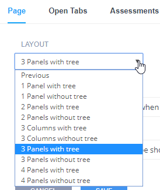
The layouts we currently offer can be found in the dropdown list.
Click here for information on how to reference these panels when auto opening code files, url previews or terminal windows.
The top-most and default entry in the Layout dropdown is Previous. This means it will use the same panel layout as specified on the previous page.
Show/Hide Folders
Your content will often want to show code samples. Codio's recommended approach is to put each set of code samples into a dedicated folder. Then, using the page settings, you can specify that folder. All non-specified folders are hidden from view in the file tree.
The benefit of hiding folders is that the student is not distracted by a large list of folders and files that are not relevant to the topic your are explaining.
Full File Tree:
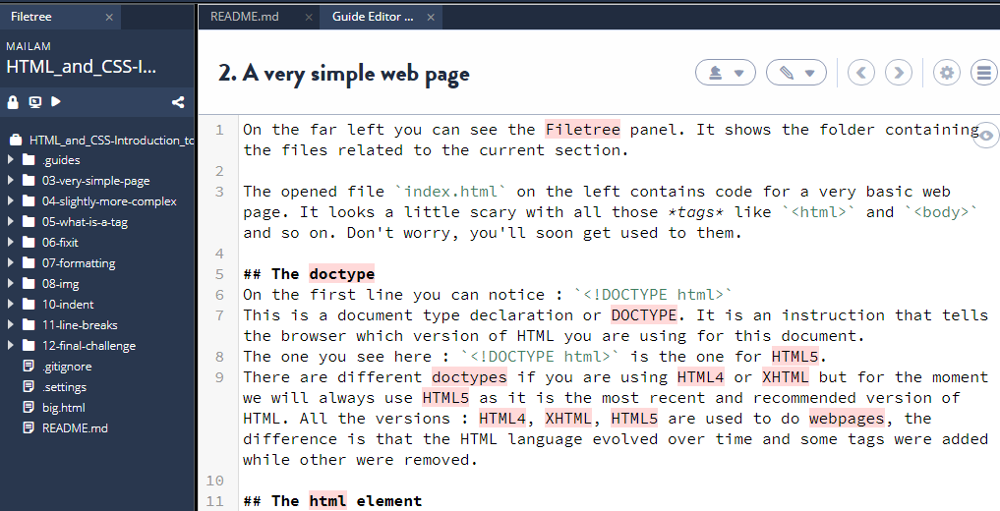
Hiding of Folders:
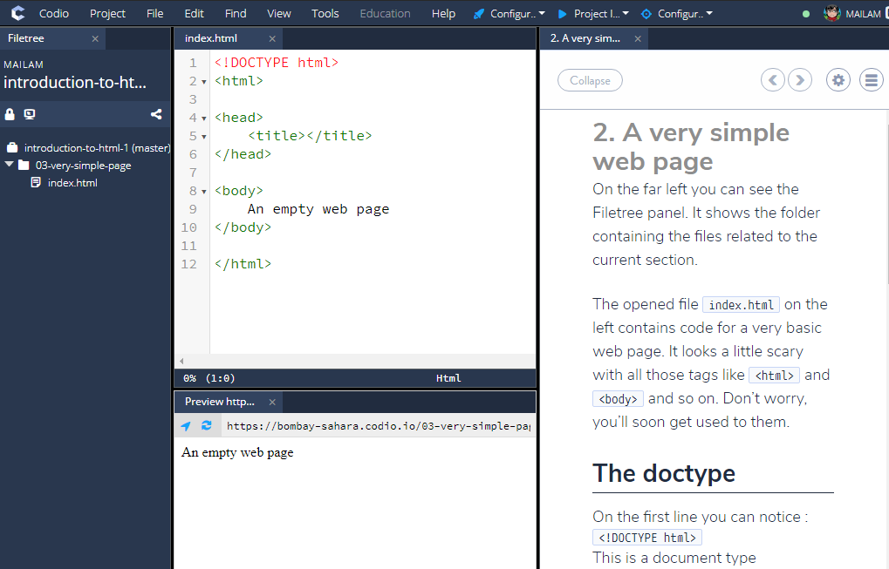
Defining folders
To define which folders to show make sure your page is selected. Next, in the Show Folders field, specify the folder or folders which should be shown in the file tree. Use the ; character to separate multiple folders.
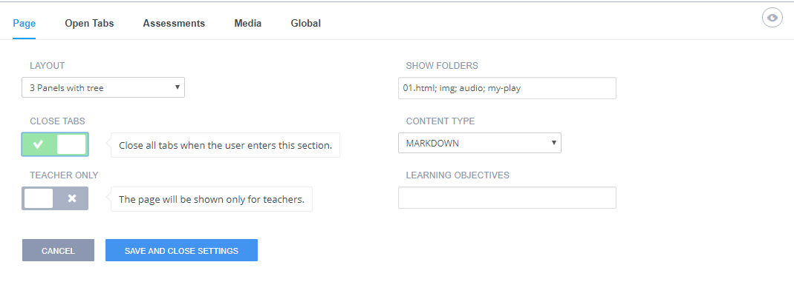
If you have several pages that show the same folders, you only need define the folders on the first page of the set of pages. All subsequent pages will use the same Show Folders setting until a new one is encountered.
Content Type
You can specify whether the page content type is markdown (strongly recommended) or HTML. If you choose HTML, then you will need to set the page HTML header and footer in Global Settings.
Teacher only content
If this switch is enabled then the page contents will not be show to students. Teachers will be able to see it when they select Open as teacher from a assignment in a course.
Learning Objectives
This is a tag field that can be useful for data analysis.
Open tabs
You can automatically perform any of the following actions when a page is shown:
- Reconfigure the overall IDE panel layout.
- Open files.
- Open a url preview including external websites.
- Open a terminal window and optionally run a terminal command.
- Select lines you wish to highlight within each file.
You should also be aware that you can achieve the same actions from Markdown directives on a page. Click here for details.
Page - Close Tabs
Enable this to close all panels open from the previous page.
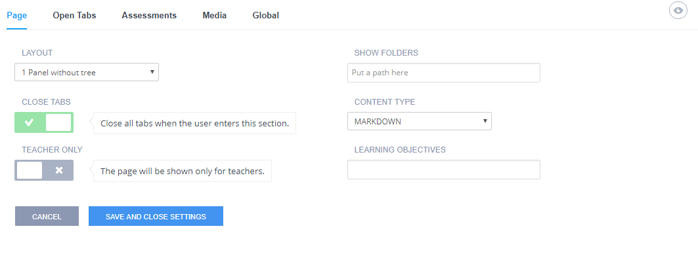
Open Tabs
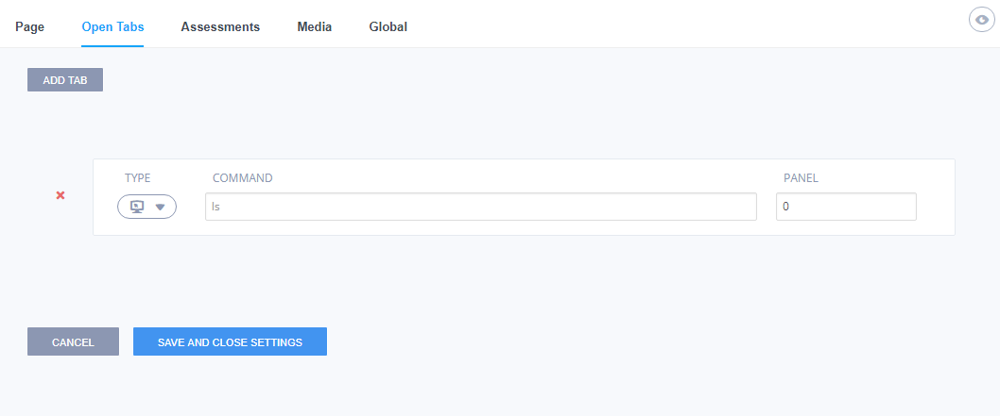
Files can be opened automatically to present the student with relevant files.
The Add Tab button allows you to create multiple lines into your configuration to address most scenarios you are likely to encounter.
You can also drag and drop files in from your project file tree to the page to add them to the Open Tabs section so that file will be opened in a tab for the reader as well as Drag and Drop on the Open Tabs area in the content.
Please note: image files dragged in to a page will be automatically tagged to display within the content rather than in a new panel. If you wish to have an image file open in a panel, then you would need to add it directly in the Open Tabs area. You can also drag/drop from the file tree. The correct path to the file will be included.
Opening Files
To open files, select the file type and enter the file name, including the path to the file if not in the root of the project workspace.
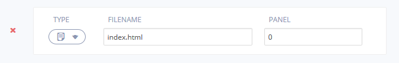
To open multiple files in the same panel, enter in the following format:
index.html, main.css
Previewing
To preview your project, select the Preview Type. If you wish to show a workspace or external website page, use the Preview option and enter the appropriate URL.
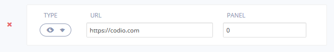
Please note: If the URL you are previewing does not allow embedding in an <iframe>, then you won't be able to use https addresses. You would have to use an http address instead, in which case it will automatically open in an new browser tab and not within Codio.
Opening the terminal and running system commands
To open a terminal window, select the Terminal option.
You can also specify a terminal command to run when a section is displayed. For example, your content may run bash scripts to copy files into the root of your project from the /.guides folder (which is hidden when content is running) at a certain point in your content.
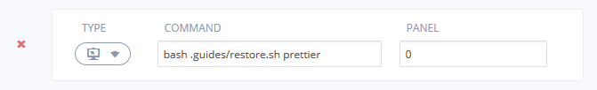
You can also specify system commands in a new terminal window like so:
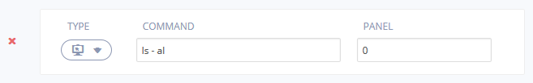
Highlighting lines in your code
To highlight one or more lines within an auto-opened file, select the Highlight option and then
- Enter a piece of reference text, contained within your target file, into the Reference ... field
- Specify the number of lines, from that reference point, you want to highlight
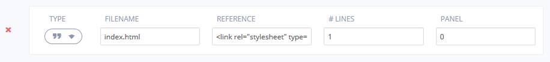
Using reference text rather than a line number means that if you insert anything into your file in the future, Codio is able to adjust the highlighted block based on the reference text. If you insert or remove lines within the block then you would need to adjust the line count.
If there is any potential ambiguity with this approach, simply insert a comment which is guaranteed unique and reference that.
Any combinations are acceptable and they will be opened in the order specified.
Visualiser
Codio supports Python Tutor, allowing students to overcome a fundamental barrier to learning programming: understanding what happens as the computer executes each line of a program's source code.
Select Visualiser and enter the path to your file.
Supported languages:
- Python
- Java
- JavaScript
- TypeScript
- Ruby
- C
- C++
Students can visualise what the computer is doing step-by-step as it executes those programs.
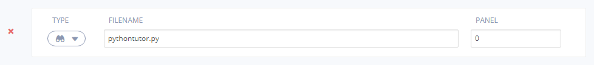
Examples
Python
nested = ['spam', 1, ['Brie', 'Roquefort', 'Pol l Veq'], [1, 2, 3]]
for temp in nested:
print(temp)
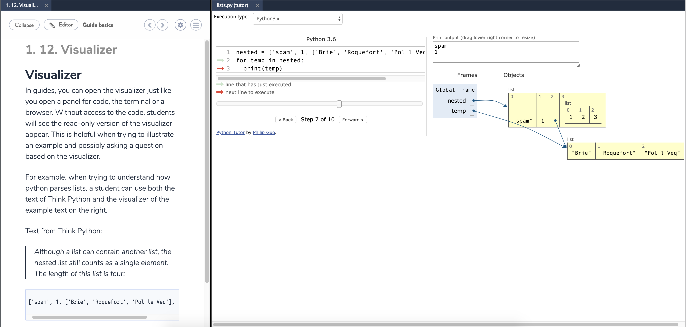
Java
public static void countdown(int n) {
if (n == 0) {
System.out.println("Blastoff!");
} else {
System.out.println(n);
countdown(n - 1);
}
}
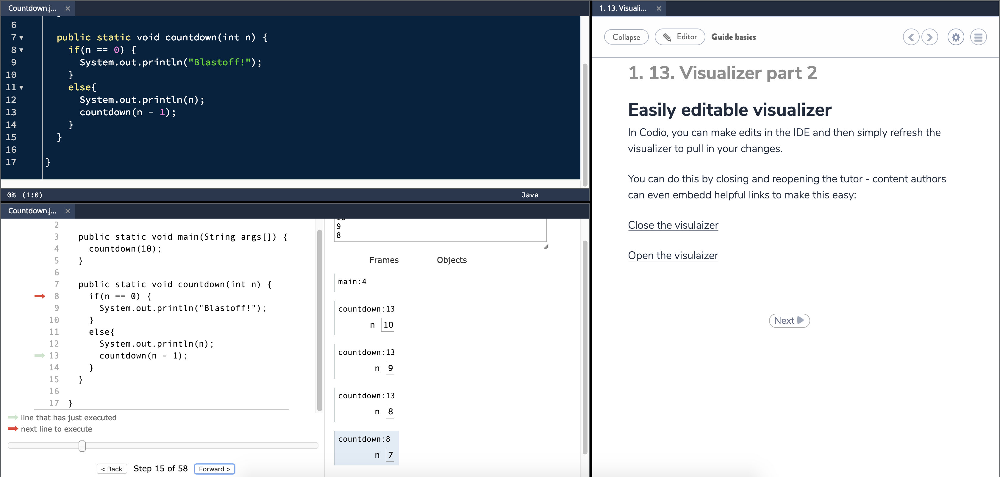
For more information and examples see Python Tutor.
Specifying the panel number
If your layout for this page involves multiple panels, then you can also specify the panel number to display the file in.
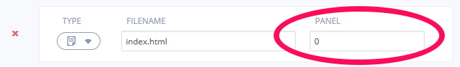
If you leave the panel field empty, then the default panel will be chosen, which is the same as 0.
The panel order is left to right and then top to bottom and the last of all, the filetree (which you would rarely want to use).
Important: The first panel is 0, not 1.
Assessments
This settings item is rarely used. It shows a complete reference of all assessments in the book or guide. The usual place from which you edit assessments is the assessments button at the top of the page.
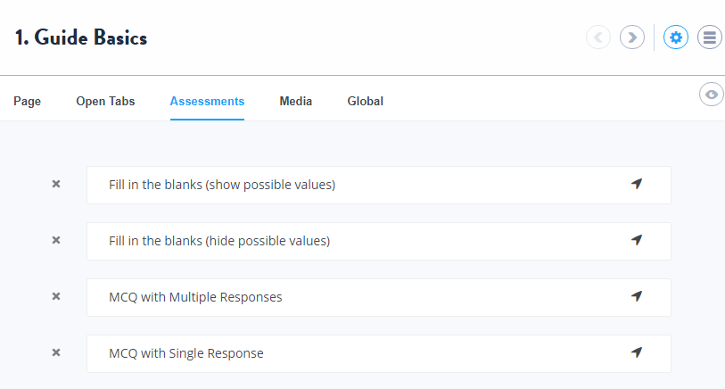
If there are any assessments that had been created but subsequently deleted, they will be highlighted in red. You can then delete them from the project.
Media
This setting allows you to add a soundtrack to your page, that plays when the page is shown. It can trigger opening of files, terminal windows and preview windows at designated times within the track.
Click here for details on how to use this feature.
Global
The settings on this page apply to the entire guide or book.

Scripts
This allows you to include the path and file name of a script file from a page using an HTML <src> tag. Provide one script path per line.
HTML header and footer
This is used for any pages which are designated in the page settings as an HTML page. The header/footer will be placed before/after the HTML page content.
Theme
There is currently only a single theme.
Lexikon Topic
If you want a lexikon topic to appear you should place the name of the Lexikon topic here.
Suppress page numbering
Removes any page numbers from the table of contents when the content is shown.
Hide Menu
Hides the Codio menu. You should be aware that this will prohibit access to functions that are accessible via the menu.
Allow Guide to be closed
Allows students to close the guide content. The content can be restarted by selecting the 'start guide' icon in the file tree:

Use Mark as Complete
For a discussion on the use of the this feature, please click here.
This setting is enabled by default and will show students a button at the end of the assignment, from their dashboard and from Education menu in the IDE they can select to mark as complete.
If you have set the assignment Duration 'On assignment End' action to mark as complete or disable and mark as complete, the assignment will automatically be marked as complete when the end date/time of the assignment is reached and you can elect to suppress the ability for students to have to mark their assignments as complete by disabling this setting.
Use Submit Buttons
For a discussion on the use of the this feature, please click here.
This is enabled by default and shows students a button for assessments for them to submit their answers. If you have set the Assignment Duration, when the end of assignment duration date/time is reached, all answers to the assessments will be automatically submitted
Collapsed on Start
Enable this to collapse the guides pane in the assignment/project when the layout is not 1 Panel. Performs similar task to the collapse button in playmode.
The guides can be reopened by clicking the hamburger icon: 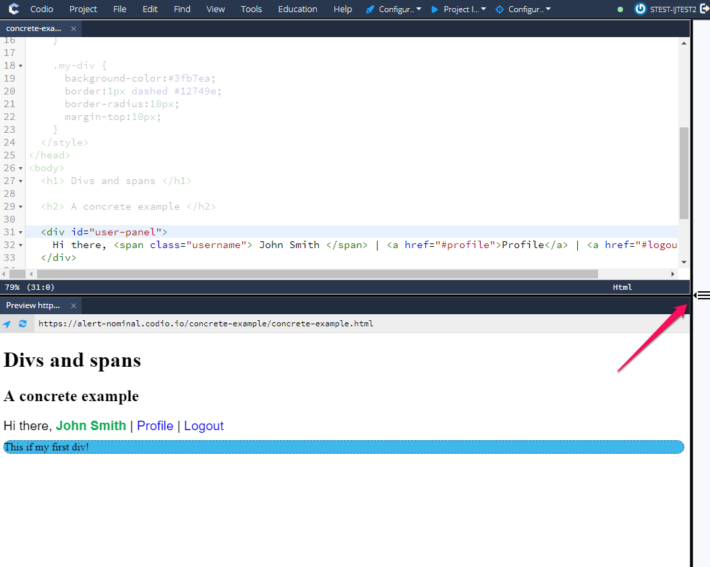
Hide Sections Toggle
Enable this to hide the option for students to switch sections using the Section list hamburger icon
Hide Back to Dashboard button
Enable this to hide the 'Back to Dashboard' button that by default will show to the students at the end of the assignment
Protect Layout
Enable this to prevent tabs being opened or closed by students in the assignment